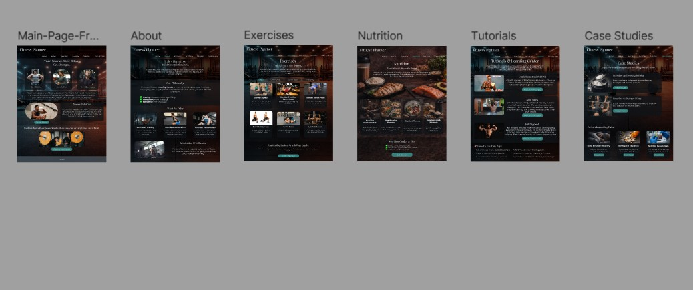

This class is a website design course in which we will utilize HTML and CSS to create the front end of a website, while also using JavaScript to add functionality.
Assignments
Projects
-
Projects Part 1

This project outlines the structure of the website I will be designing throughout the semester. Highlighting the key features that will be included, such as nutrition tracking, exercise planning, case studies on supplements, and embedded YouTube tutorials.
-
Projects Part 2

This project shows a wireframe for what my website home-page will look like.
- Video: Functionality Showcase
- Video: Wireframe Walkthrough Video
-
Projects Part 3

This project shows a full outline of all of the webpages that will be Implemented into my website.
- Video: Complete Wireframe Showcase
-
Project - Home Page
This project is my Fitness Planner home page for my website